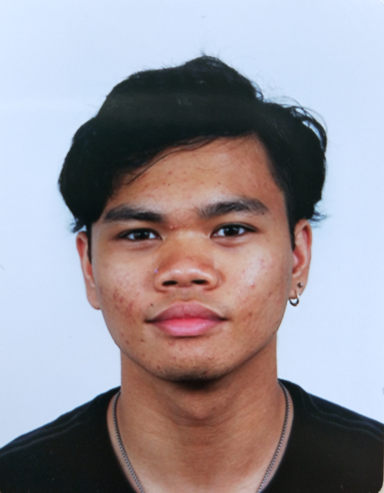

About Me
Hi, my name is Marlow. I have been taking the course Communication and Multimedia Design for 3 years at the AUAS. User Interaction and Visual Interface are what I have been very interested in so far during my course. However it appears I also have some aptitude for the more technical subjects along the lines of Fron-end design. This is why I feel more like an all-rounder.
During the first semester of my third year I decided to take up Information Design, because I have always been interested in visualisations. There I found out that, on top of visualisation being cool to me, animation also tends to be very fun.
As I stated before, I do not back down for new challenges and my ability to pick up new skills in a short time, is beneficial to me. Right now I still want to develop a more polished professional touch in my projects. My dream is to create my own designing style, that would be recognizable at a single glance.
CV